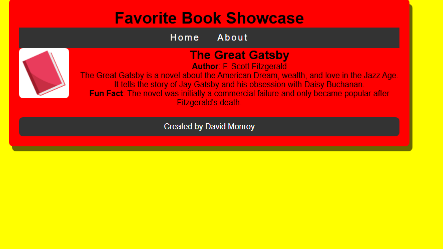

-
Project 1: Local Parks and Recreation
This project was created after reading through chapter 2 of the textbook (Basics of Web Design HTML5 & CSS).
-
Project 2: Cozy Cafe
This project was created after reading through chapter 4 of the textbook (Basics of Web Design HTML5 & CSS).
-
Project 3: Paris Travel Guide
This project was created after reading through chapter 5 & 6 of the textbook (Basics of Web Design HTML5 & CSS).
-
Project 4: Favorite Book Showcases
This project was created after reading through chapter 7 of the textbook (Basics of Web Design HTML5 & CSS).
-
Project 5: My Portfolio
This site (which you are currently using) was created for midterm project.